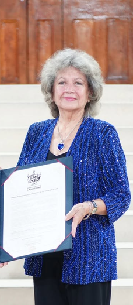

La Huanchaquera
Marinera norteña · Obra destacada
Poeta y compositora · Perú
Palabra, memoria y tradición hechas marinera norteña.
Conocer su obra
01 / Biografía
Luz Iparraguirre Huertas, conocida artísticamente como Lucy de Mantilla, es poeta y compositora peruana. Su obra está profundamente vinculada a la marinera norteña y a la transmisión de la memoria musical del Perú.
Es autora de más de sesenta marineras, entre ellas «La Huanchaquera», «Corazón remendado» y «Coraje Cholo» . Su legado poético también ha recibido reconocimiento internacional con el TUMI USA Award, siendo este solo uno de los innumerables reconocimientos que ha recibido en su carrera artistica.
Solicitar biografía completa02 / Obra seleccionada
Marinera norteña · Obra destacada
Marinera norteña · Obra destacada
Catálogo completo por documentar
Más de sesenta marineras: una vida de poesía convertida en música.
Lucy de Mantilla · Legado musical peruano
03 / Contacto
Para propuestas profesionales, solicitudes de partituras o información de prensa:
Información de contacto por confirmar